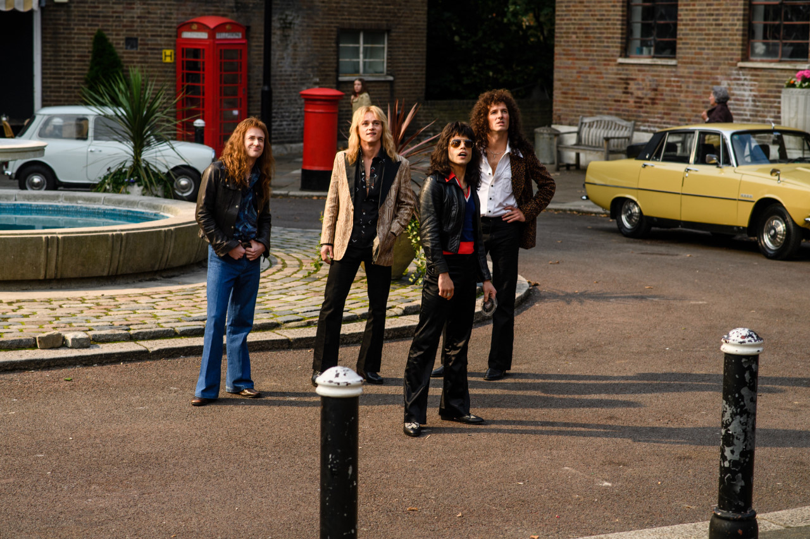

본문콘텐츠영역
Story
an immigrant outsider who worked as a baggage worker at an airport and dreamed of music.
He will lead the band Queen under the name Freddie Mercury when he enters a local band that was looking for a vocalist from Parrockversara.
"Queen," which had grown to captivate audiences with its timeless original music and colorful performances, has become a world star with a six-minute experimental song "Bohemian Rhapsody," despite the record label's opposition that it will be shunned on radio and broadcasting.
But Freddie Mercury, who had an unrivaled presence, was tempted to debut as a solo artist and ended up breaking up with members who had been together for a long time.
From the world's marginalized outsider to the legendary rock band 'Queen', their real story that we didn't know begins!
Plot
The film opens in 1985 with Queen about to take the stage at Bob Geldof's benefit concert Live Aid at Wembley Stadium. The story flashes back to 1970 when "Freddie" Farrokh Bulsara works as a baggage handler at Heathrow Airport and lives with his parents and sister. Freddie goes to a pub to see the band Smile. As he seeks them out after the show, Freddie is attracted to Mary Austin and learns that she works at the boutique Biba. Freddie finds drummer Roger Taylor and guitarist Brian May and learns that their lead singer, Tim Staffell just quit. Freddie offers himself as a replacement and impresses them with his vocal ability.
Freddie goes to Biba, encounters Mary, and they become a couple. With Freddie as the lead singer and new bassist John Deacon, the band plays pub gigs across Britain. Freddie urges them to think bigger and sell their van to finance a record album. As they work in a studio late at night, an A&R rep from EMI asks engineer Roy Thomas Baker for demos.
Freddie changes the band's name to Queen and his name to Freddie Mercury. They sign with John Reid, Elton John's manager, and land a U.S. tour. Paul Prenter, who is attracted to Freddie, manages Queen's daily schedule. An appearance on Top of the Pops gives Queen their first hit, "Killer Queen". Freddie proposes to Mary, but during the band's sold-out U.S. tour, he begins questioning his sexuality.
In 1975, Queen record their fourth album, A Night at the Opera, but quit EMI when executive Ray Foster refuses to release the six-minute song "Bohemian Rhapsody" as the album's lead single. Freddie conspires with radio DJ Kenny Everett to debut the song on his program. Despite mixed reviews, "Bohemian Rhapsody" becomes a global hit. Following a world tour, Freddie begins an affair with Paul and comes out to Mary as bisexual. She counters that he is gay and they break up but remain close friends.
Tensions arise in the band over Paul's influence over Freddie. In 1980, after a lavish party at his home, Freddie is attracted to a server, Jim Hutton, who tells Freddie to find him when he learns self-acceptance. Paul encourages Reid to persuade Freddie to go solo, but when the idea offends Freddie, Paul feigns ignorance, leading Freddie to fire Reid without consulting the band. Despite the increasing strain, Queen produces the hits "We Will Rock You" and "Another One Bites the Dust", and their lawyer, Jim "Miami" Beach, takes over management. At a press conference for the 1982 album Hot Space, reporters exasperate Freddie with questions about his personal life and sexuality.
Freddie's relationship with the band sours further after the music video for "I Want to Break Free" backfires and he signs a $4 million solo deal with CBS Records. He records his 1984 album Mr. Bad Guy in Munich and engages in drugs and gay orgies with Paul, and starts to realize he's unwell. Mary, now married and pregnant, visits unexpectedly and urges Freddie to return to Queen and participate in Live Aid. Realizing that Paul withheld this news and has been a corrosive influence, Freddie severs ties with him. In retaliation, Paul goes public about Freddie's sexual escapades.

Freddie returns to London to reconcile with the band and persuade them to play at Live Aid at the last minute. With AIDS spreading worldwide, Freddie learns that he is infected. He reveals his condition to the band but brushes off their sympathy. They all embrace in solidarity. On the day of Live Aid, Freddie reconnects with Jim Hutton, Mary, and his family, and heeds his father's Zoroastrian maxim, "Good thoughts, good words, good deeds." Freddie and the band are in top form at Live Aid, performing "Bohemian Rhapsody", "Radio Ga Ga", "Hammer to Fall" and "We Are the Champions", and helping increase donations during the event.
The film ends with graphics explaining Freddie's death in 1991 at age 45, how the band hosted the Freddie Mercury Tribute Concert in his honor, and that Freddie remained friends with Mary and had a loving relationship with Hutton for the remainder of his life.